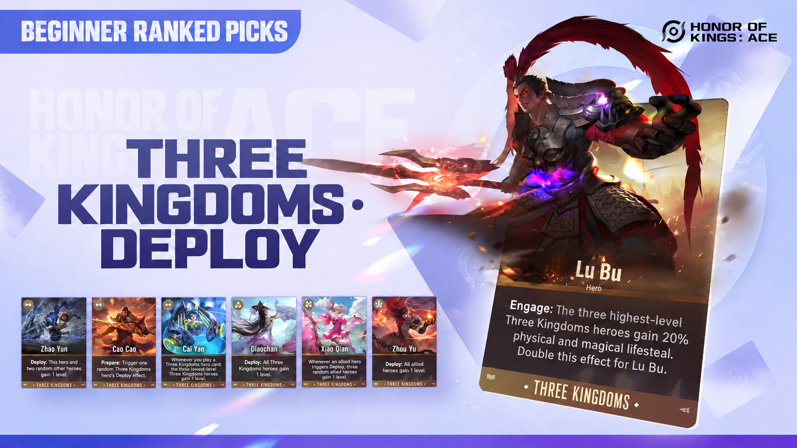
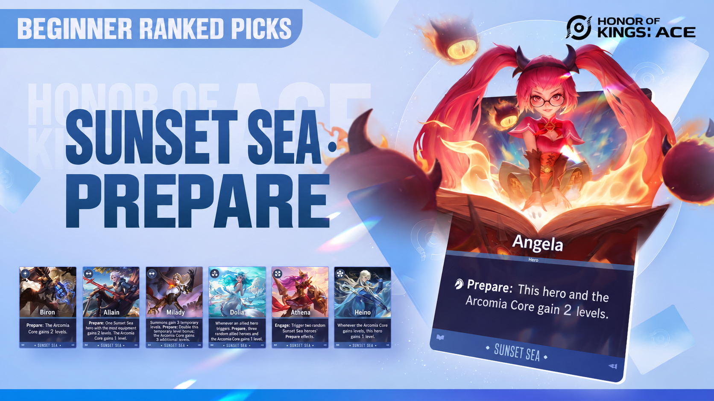
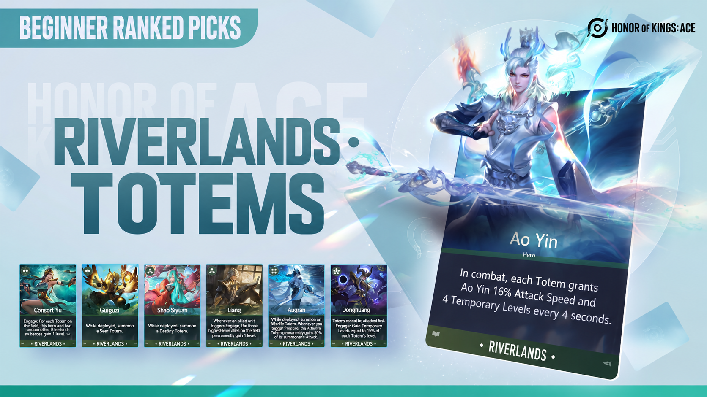
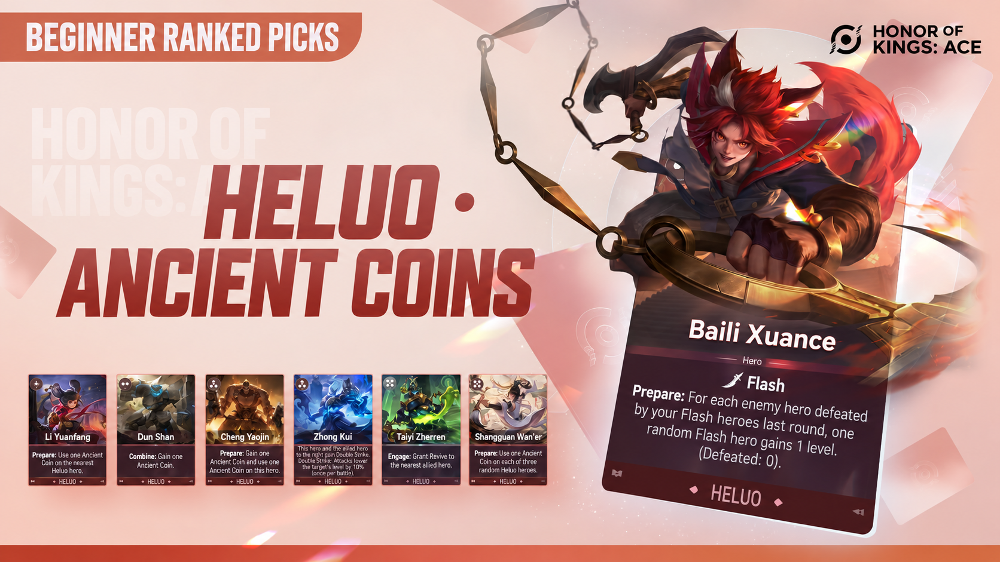
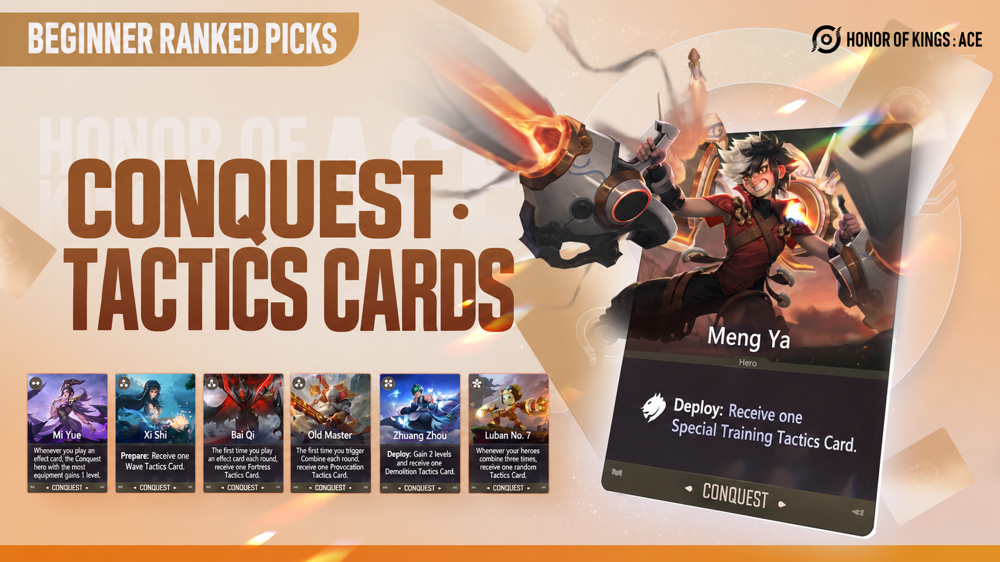
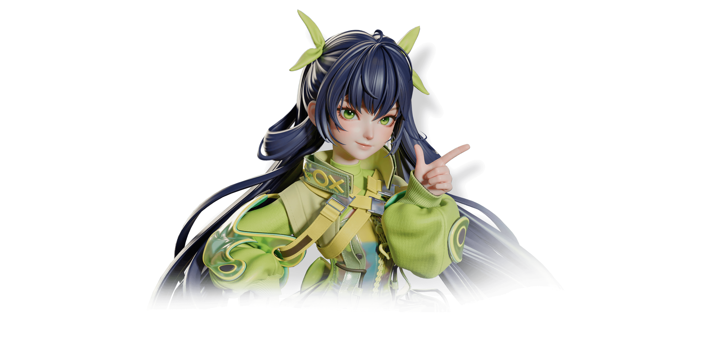
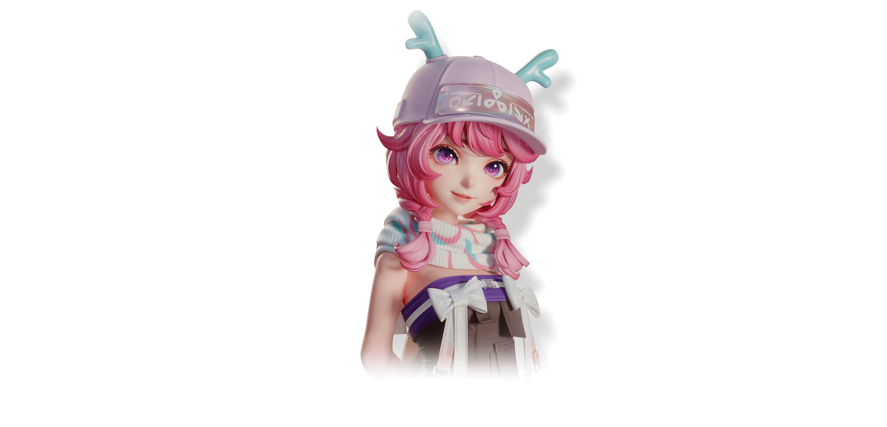
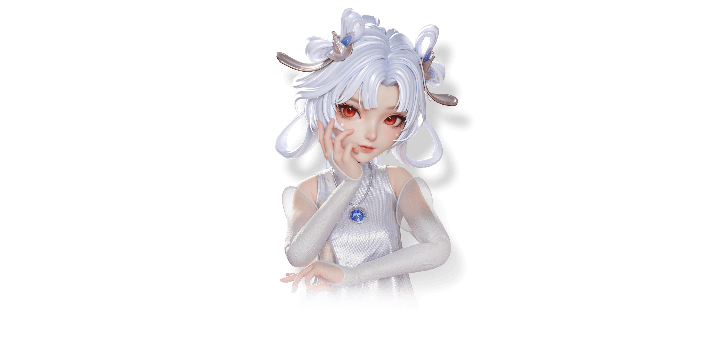

Deploy
Triggers after you play this card.
▶ Original demonstration · Chinese ↗A fan-made translation of official Honor of Kings: ACE content. Not affiliated with or endorsed by Tencent or TiMi Studio Group.

Learn the essentials and get ready for your first match.
Five beginner builds, with quick diagrams, detailed guides, and original videos.
Main carry: Lu Bu

Original video in Chinese; plays in the original Tencent player.
Select a diagram to enlarge it. Some small labels in the AI-edited artwork may be imperfect; use the text guide below for precise hero names and effects.
Lu Bu, Cai Yan, Zhao Yun, Diaochan, Xiao Qiao, Zhou Yu, Cao Cao
Cao Cao’s Prepare effect triggers Three Kingdoms heroes’ Deploy effects, steadily raising the team’s levels. Cai Yan adds levels when Three Kingdoms hero cards are played; Xiao Qiao adds more levels when allies trigger Deploy. Build a strong Lu Bu as your main carry.
Main carry: Angela

Original video in Chinese; plays in the original Tencent player.
Select a diagram to enlarge it. Some small labels in the AI-edited artwork may be imperfect; use the text guide below for precise hero names and effects.
Angela, Dolia, Biron, Allain, Milady, Athena, Heino
Use the Prepare effects of Biron, Allain, Milady, and Angela with Dolia to grow your heroes and the Arcomia Core. Add Athena and Heino later to accelerate that growth. At combat start, the Core distributes its levels as Temporary Levels among Sunset Sea heroes; a single hero can receive at most 50% of the total. Athena’s Engage effect triggers allied Prepare effects.
Main carry: Ao Yin

Original video in Chinese; plays in the original Tencent player.
Select a diagram to enlarge it. Some small labels in the AI-edited artwork may be imperfect; use the text guide below for precise hero names and effects.
Ao Yin, Consort Yu, Liang, Shao Siyuan, Guiguzi, Augran, Donghuang
Guiguzi, Shao Siyuan, and Augran summon Seer, Destiny, and Afterlife Totems. Their levels grow with their summoners. More Totems give Ao Yin more Attack Speed and Temporary Levels during combat. Consort Yu and Liang add team levels. Donghuang protects the Totems and gains Temporary Levels from them. Seer provides healing, Destiny grants levels, and Afterlife helps the frontline absorb damage.
Main carry: Baili Xuance

Original video in Chinese; plays in the original Tencent player.
Select a diagram to enlarge it. Some small labels in the AI-edited artwork may be imperfect; use the text guide below for precise hero names and effects.
Baili Xuance, Shangguan Wan’er, Dun Shan, Cheng Yaojin, Zhong Kui, Taiyi Zhenren, Li Yuanfang
Li Yuanfang, Dun Shan, Cheng Yaojin, and Shangguan Wan’er generate Ancient Coins. Spend them on Baili Xuance to keep raising his level. Xuance also gains levels from the previous round’s kills. Zhong Kui lowers enemy levels, while Taiyi Zhenren provides a revive and gives Xuance more time to deal damage.
Main carry: Meng Ya

Original video in Chinese; plays in the original Tencent player.
Select a diagram to enlarge it. Some small labels in the AI-edited artwork may be imperfect; use the text guide below for precise hero names and effects.
Meng Ya, Mi Yue, Xi Shi, Bai Qi, Old Master, Zhuang Zhou, Luban No. 7
Xi Shi, Bai Qi, Old Master, Zhuang Zhou, and Luban No. 7 generate Tactics Cards. Playing effect cards triggers Mi Yue, who grants levels to your Conquest hero with the most equipment. Keep that hero as Meng Ya and keep playing cards to grow your main carry.
Explore each tactician’s skill, Secret Technique, and exclusive talent.

Bring your own firepower, then modify your weapon into different forms.
At the start of combat, Xiangxiang attacks enemies with her weapon. Her base Attack is 20. Each tier 1–3 hero you have at level 10 or above grants her +20 Attack.
Deal a cumulative 10/15/20/30 damage to tacticians to earn a Weapon Modification Secret Technique Card.
Xiangxiang gains +20% Attack. Choose one weapon modification.
Xiangxiang gains an Attack bonus of (the total level of your heroes × 0.5)%.

Summon a fawn to absorb frontline damage and strengthen it through victories.
At the start of the game, Yaria summons her beloved fawn. It gains 2 levels each round, plus 4 more if you won the previous battle.
Every 3 rounds, receive a Magical Fawn Secret Technique Card.
After combat begins, the fawn moves between enemies without collision. Every 3 seconds, it taunts enemies within 1 tile. +8 levels.
The fawn can wear equipment and immediately equips a Frozen Storm. +10 levels.
At combat start, the fawn creates a copy of itself nearby. If you have won 5 battles this match, the fawn gains 12 levels. The original preview shows 0 wins.
Double the fawn’s level.
When the fawn dies, divide its levels evenly among your heroes as Temporary Levels.
The fawn gains 30 levels. Receive a Fawn’s Protection item.
Unique. 30% of the wearer’s incoming damage is transferred to the fawn.
Combine heroes to earn copies, then split key cards with your Secret Technique.
After every 4 hero combinations, Bai Ge receives an Improvisation card.
Receive a copy of a random deployed hero.
Use 6 Improvisation cards to receive an Inspiration Burst Secret Technique Card.
Release 3 sword waves at 3 random non-awakened hero cards in your hand. Split each card into 2 Fleeting copies.
Receive a Prodigy card.
Select a hero and receive 4 copies of that hero’s card.

Gain levels with an increasingly powerful skill and develop four elite heroes.
Use the skill to give a random hero +2 levels. For every previous use this match, the level gain increases by 1.
When your heroes’ combined levels reach 50/150/375, receive a Bunny’s Blessing Secret Technique Card.
Trigger Little Bunny’s Help once on each of 4 random deployed heroes. The base preview shows +2 levels.
Whenever the bunny grants levels, every 5 levels also grant a random stat bonus: 15% Attack Speed, 2% physical and magical lifesteal, or 2 physical and magical Defense. Each time Little Bunny’s Help grants a total of 65 levels, receive a Bunny’s Blessing card.
Specialize in one faction and earn additional faction talents.
Choose one of two random factions. Your skill then becomes: spend 1 Energy to receive a hero card from that faction.
Deploy 6 heroes from your selected faction to earn a Plenty of Friends Secret Technique Card.
Draw 4 random hero cards from the faction selected by your skill.
Receive a Join the Fun card.
Choose one of three talents associated with the faction selected by your skill.
Understand the effects written on your cards.
13 keywords shown
Triggers after you play this card.
▶ Original demonstration · Chinese ↗Triggers at the start of combat.
▶ Original demonstration · Chinese ↗Triggers at the start of a round.
▶ Original demonstration · Chinese ↗Triggers when the hero dies.
▶ Original demonstration · Chinese ↗Play a card matching a deployed hero to combine it with that hero and strengthen them.
▶ Original demonstration · Chinese ↗At combat start, the hero jumps to the mirrored position on the enemy battlefield.
▶ Original demonstration · Chinese ↗When this card is played, take levels from one random allied hero within 1 tile: up to 10 levels, excluding Temporary Levels.
▶ Original demonstration · Chinese ↗These levels are removed at the end of combat.
▶ Original demonstration · Chinese ↗Automatically destroyed at the end of the round. Selling it gives no Energy.
▶ Original demonstration · Chinese ↗The hero returns after dying with 50% Health. Each hero can revive at most 10 times per round.
▶ Original demonstration · Chinese ↗Triggers if you win a battle while this hero is deployed.
▶ Original demonstration · Chinese ↗Triggers if you lose a battle while this hero is deployed.
▶ Original demonstration · Chinese ↗Triggers when this deployed hero is sold.
▶ Original demonstration · Chinese ↗More builds from the creators featured on the official site.
Video titles and thumbnails are translated. The linked videos retain their original Chinese audio and on-screen text.
A powerful full-team level 999 lineup
By Xijun · Chinese-language video
Dominate once your lineup is complete
By Hajimide · Chinese-language video
An easy build for new players
By Master Shark · Chinese-language video
A smooth beginner pick for climbing ranks
By Winter Melon Soup · Chinese-language video
Learn the build and climb steadily
By Lao Pili · Chinese-language video
Simple, fun, and bursts down fragile foes
By European Fish · Chinese-language video
Easy to learn, ready to win
By Yan Xiaoxiu · Chinese-language video
A powerful, easy-to-play hidden strategy
By Yan Xiaoxiu · Chinese-language video
A satisfying must-learn beginner build
By An Cang Xuan G · Chinese-language video
Endless revives sweep the battlefield
By Master Shark · Chinese-language video
Fill the battlefield with summons
By Liuyun · Chinese-language video
A high-ceiling build for beginners
By Hansang · Chinese-language video